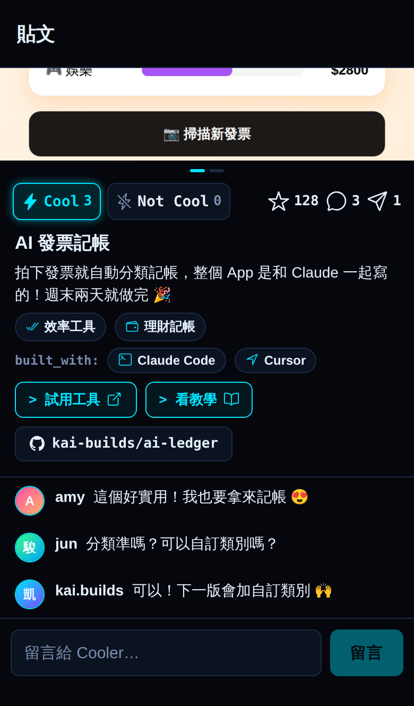
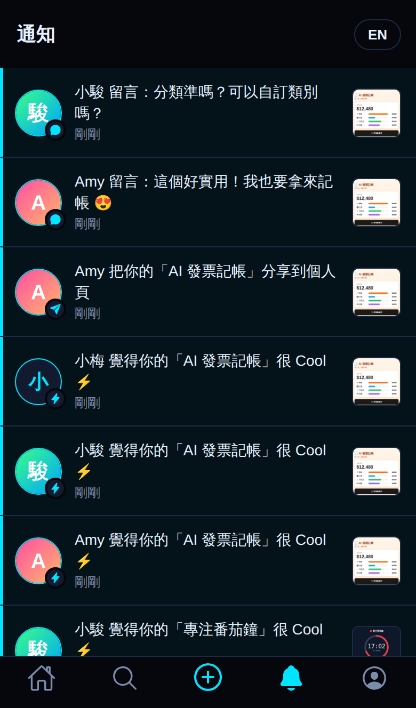
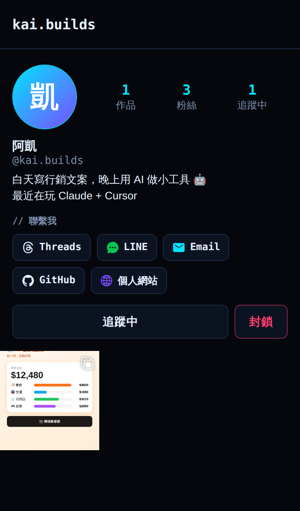

做出來的那一刻，最想跟人分享
你跟 AI 合作做的 AI 工具，
值得被大家看見
截圖存在相簿、連結放在書籤，最後只有你自己知道它有多酷。YourWowAI 讓分享變得超簡單：附上畫面、寫一句介紹，你的作品就會出現在所有人面前，收到真心的 Cool 和回饋。
給你的 AI 作品一個舞台
為 AI 作品量身打造的分享體驗。
一張圖，就說清楚
每則分享都附上截圖或 YouTube 示範影片，截圖最多 10 張，左右滑或點箭頭切換，影片直接在貼文裡播放。你的作品長什麼樣子，大家一眼就懂。
收下每一個 Cool
喜歡就按 Cool，雙擊圖片也行。真心的 Cool 和 Not Cool，讓你知道作品打中了誰，下一版做得更好。
讓對的人找到你的作品
點選你用到的 AI：Claude、Claude Code、ChatGPT、Gemini、Grok、Cursor……清單裡沒有的也能自己填。大家用工具和關鍵字就搜得到，你的作品不會被淹沒。
分享出去，馬上有回音
有人 Cool 你的作品、留言、分享你的作品或追蹤你，即時通知不漏接；你追蹤的人一分享新作品，也會第一個知道。
一次分享，帶來下一個機會
在個人頁放上你的社群帳號、GitHub、LINE 或 Email，喜歡你作品的人找得到你，下一個合作也許就這樣來了。
放心分享
不喜歡的內容可以檢舉，不想看到的人可以封鎖，被多人檢舉的內容會先隱藏，讓分享的地方保持友善。
連動 GitHub，一鍵帶入作品
從清單直接挑自己的 GitHub 專案，或貼上任何專案網址按「匯入」，名稱、介紹、網站和用到的 AI 自動填好。分享後附上原始碼按鈕，想看你怎麼做的人一點就到；貼文也會顯示專案的 GitHub 星星數，點 就能到 GitHub 幫你按星。
依興趣領域瀏覽
每個作品都標上應用領域：教育學習、理財記帳、健康運動、遊戲娛樂、開發工具……選一個分類，只看你有興趣的作品。
作品更新，貼文也跟著更新
做出新版本了？隨時編輯貼文：換截圖、換示範影片、改介紹、補上分類都可以。最得意的 3 個作品，還能釘選在個人頁最上方。
好作品，分享出去
看到喜歡的作品，一鍵分享到自己個人頁的「分享」分頁，或把連結傳給朋友。每則貼文都看得到留言數和分享數。
用你習慣的方式登入
用 GitHub、Google 登入，iPhone 也能用 Apple 登入，或用帳號密碼。同一個帳號可以綁定多種登入方式。
讓 AI 幫你發文
產生專屬的 AI Webhook 網址，交給 Claude Code、ChatGPT、n8n 或 GitHub Actions。作品一上線，AI 就幫你分享；推出新版本，AI 也能幫你更新貼文。
看看大家都分享了什麼
真實的 App 畫面。




三步驟，把作品分享出去
不到一分鐘就完成。
截一張圖，或貼上 YouTube 影片
從相簿選截圖、直接拍照，或貼上示範影片的 YouTube 連結，讓大家看到作品實際的樣子。
寫一句介紹，選個領域
工具叫什麼、哪裡可以試用，簡單幾句就好；放在 GitHub 上的作品，從清單挑一下就自動填好。點選用到的 AI 工具，再選最多 3 個應用領域，讓對的人找到它。
按下分享，等著收 Cool
作品馬上出現在大家的動態上。有人按 Cool、留言或追蹤你，都會即時通知你 ⚡
或者，交給 AI 幫你分享
到 編輯個人檔案 → AI Webhook 產生專屬網址，按 複製給 AI 的指示，貼給 Claude Code、ChatGPT 或任何自動化工具，例如：
請幫我把這個作品分享到 YourWowAI。先用 GET 讀取 YOUR_WEBHOOK_URL 的使用說明，再用 POST 把作品以 JSON 送到同一個網址：工具名稱、介紹、YouTube 示範影片連結或截圖、試用連結、GitHub 專案、用到的 AI 工具和分類。習慣用指令列，或想接 GitHub Actions 之類的自動化？一個請求就搞定：
curl https://yourwowai.onepointzeroone.org/api/hooks/YOUR_WEBHOOK_TOKEN \
-F 'title=AI 收據記帳' \
-F 'description=拍下收據，自動幫你分類記帳。' \
-F 'toolUrl=https://example.com' \
-F 'githubUrl=you/receipt-tracker' \
-F 'aiTools=Claude Code' \
-F 'categories=finance,productivity' \
-F 'media=@screenshot.png'🔒 拿到 Webhook 網址的人都能用你的帳號發文，請不要公開；外流時到「編輯個人檔案」重新產生。每小時最多 20 則。
常見問題
分享作品要付費嗎？
完全免費，也沒有廣告。
什麼樣的作品可以分享？
只要是你用 AI 幫忙做出來的工具都可以：網站、App、瀏覽器擴充功能、自動化流程、小遊戲……附上畫面就能分享。
為什麼一定要附截圖或影片？
YourWowAI 的精神是「讓作品被看見」。有畫面，大家才能一眼看懂你的工具在做什麼。截圖支援 JPG、PNG、GIF、WebP，iPhone 的照片格式也會自動轉好；示範影片請上傳到 YouTube，再貼上連結就好。
Cool 和 Not Cool 是什麼？
取代愛心的兩個按鈕。每個人對每則作品只有一票，可以改票或再按一次取消。大家只看得到總數，看不到是誰按了 Not Cool。
哪些資訊會公開？
帳號名稱、大頭貼、自我介紹、你分享的作品與留言，以及你自己選擇填寫的聯繫方式。你封鎖了誰、檢舉了什麼、按了哪則 Not Cool 都不會公開。詳見隱私權政策。
遇到不舒服的內容怎麼辦？
點貼文右上角的「⋯」就能檢舉或封鎖。檢舉後那則貼文不會再出現在你面前，我們會在 24 小時內處理。
可以刪除帳號嗎？
可以。在「個人」→「編輯個人檔案」最下方就能永久刪除帳號，你的作品、留言和所有資料都會立即刪除。
分享後還能修改嗎？
可以。在自己的貼文按「⋯」→「編輯貼文」，文字、連結、YouTube 影片、分類和截圖都能改。
可以把作品釘選在個人頁嗎？
可以。在自己的貼文按「⋯」→「釘選到個人頁」，最多 3 則會固定在個人頁最上方並標上 📌，來看你個人頁的人第一眼就看到你最得意的作品。
怎麼找到我有興趣的領域？
首頁和探索頁上方都有分類列，例如教育學習、理財記帳、遊戲娛樂。點貼文上的分類標籤，也能看到同類作品。
一定要有 GitHub 帳號嗎？
不用，GitHub 是選填的。作品放在公開的 GitHub 專案裡的話，可以省下打字，貼文也會附上原始碼連結。用 GitHub 登入（或在「編輯個人檔案」綁定）後，分享時會直接列出你的公開專案讓你挑。
可以用哪些方式登入？
網站和 App 都能用 GitHub、Google 登入，iPhone 還可以用 Apple 登入，也可以註冊帳號密碼。已經有帳號的人，可以到「編輯個人檔案 → 登入方式」綁定 GitHub 或 Google。
可以讓 AI 幫我發文嗎？
可以。到「編輯個人檔案 → AI Webhook」產生專屬網址，按「複製給 AI 的指示」，貼給 Claude Code、ChatGPT 或任何自動化工具，它會讀取網址上的說明，幫你分享或更新貼文。拿到網址的人都能用你的帳號發文，請不要公開；你可以隨時重新產生或關閉，每個帳號每小時最多發 20 則。
留言可以修改或刪除嗎？
可以。點自己留言旁的「⋯」就能編輯或刪除，改過的留言會標示「已編輯」。別人在你貼文下的留言，你也可以刪除。
紙飛機按鈕是做什麼的？
選「分享到我的 YourWowAI」，作品會出現在你個人頁的「分享」分頁，原作者也會收到通知；選「分享連結」則可以傳到其他地方。
你的下一個作品，
就從分享開始。
把你用 AI 做的工具分享出去，讓更多人看見、為你按下 Cool。現在就能用瀏覽器開始，iPhone App 即將推出。
已有 0 位 builder 加入 · 分享了 0 個作品
iPhone App 正在準備上架中。有建議，歡迎到 GitHub 留言。
About YourWowAI
YourWowAI is a free app for sharing tools you built with AI. Post a screenshot or a short demo video, add the AI tools you used and a link to try it, and collect Cool votes, comments and followers. Every post must include at least one screenshot or video, and people can find your work by AI tool or keyword. We store only what the app needs (your profile, the content you post, and your interactions), never show ads, never sell data, and you can permanently delete your account inside the app. English site · Privacy Policy · Terms of Use · Support